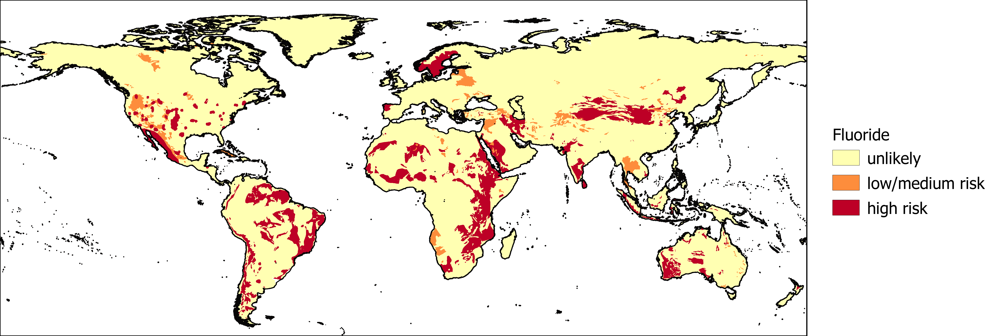

Elevated fluoride concentrations in groundwater are a potential health hazard if left untreated. The International Groundwater Resources Assessment Centre (IGRAC) provides information on the likelihood of excessive fluoride concentrations in groundwater.

The likelihood of fluoride presence in groundwater.
Reference:
Brunt, R., Vasak, L., & Griffioen, J. (2014). Fluoride in groundwater: Probability of occurrence of excessive concentration on global scale. IGRAC, Report nr SP-2004-2.